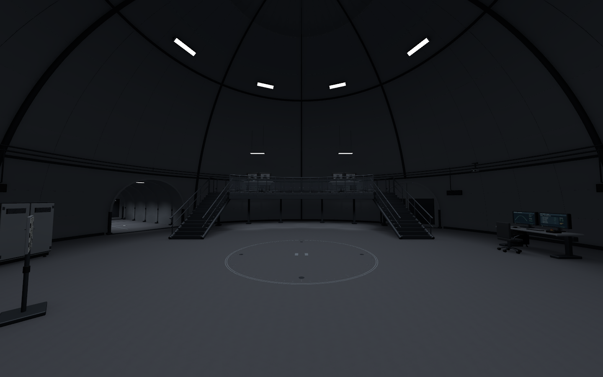
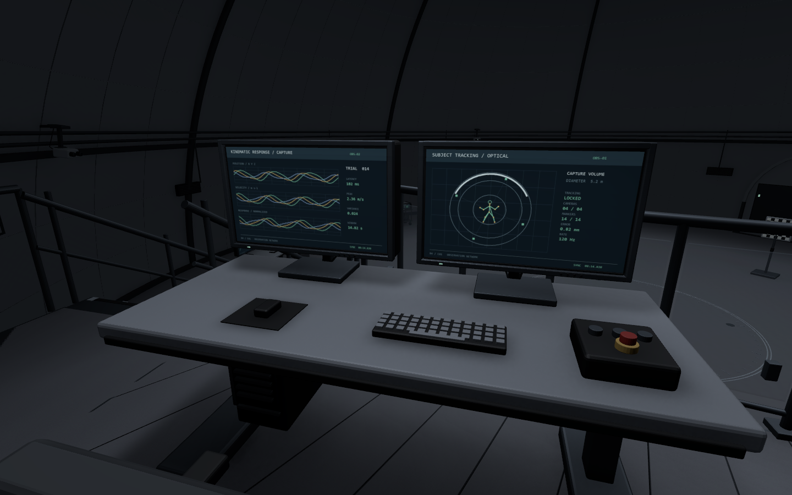
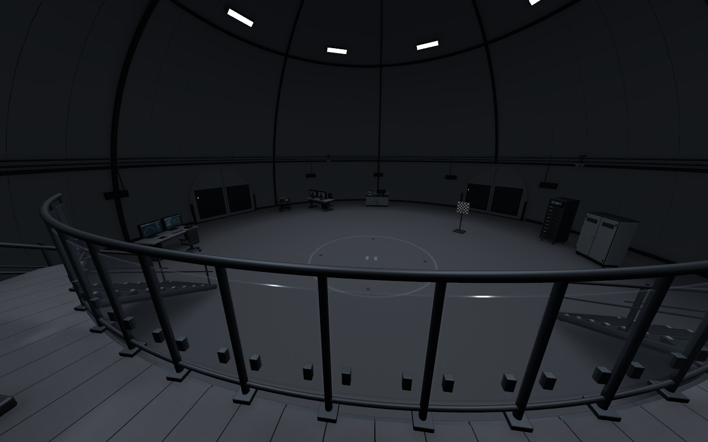
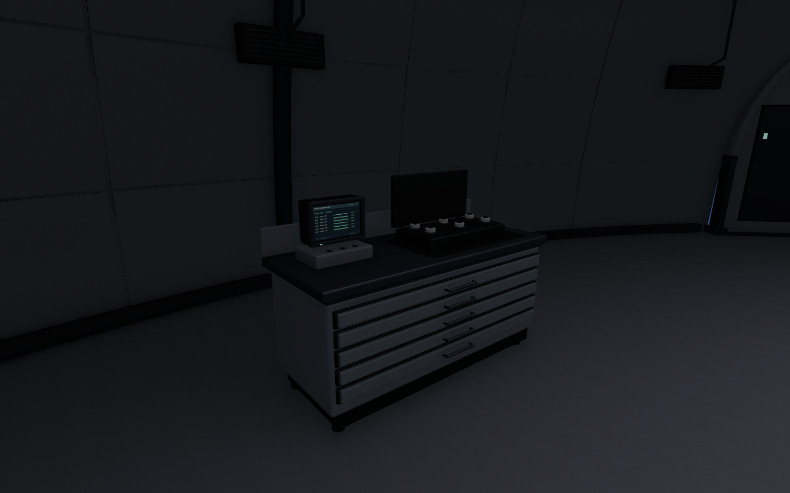
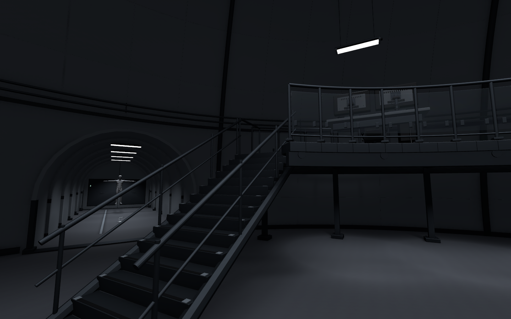
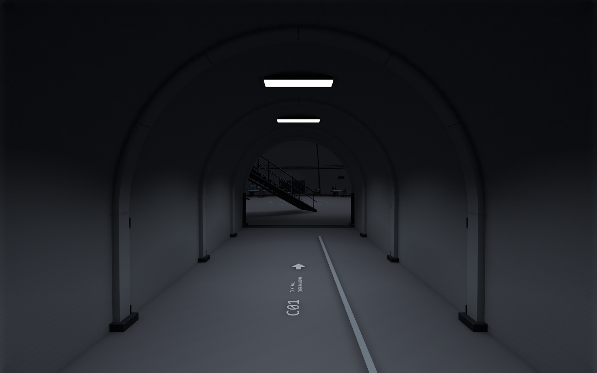
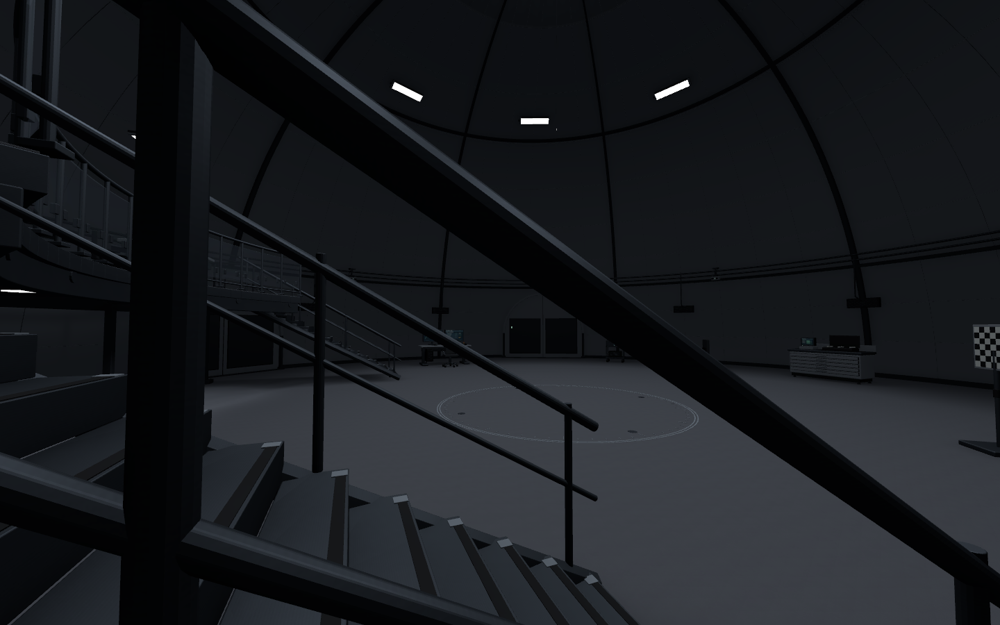
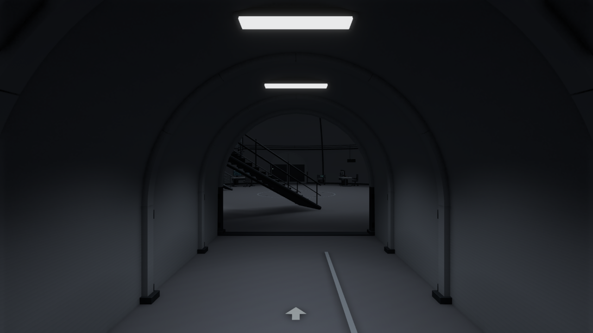
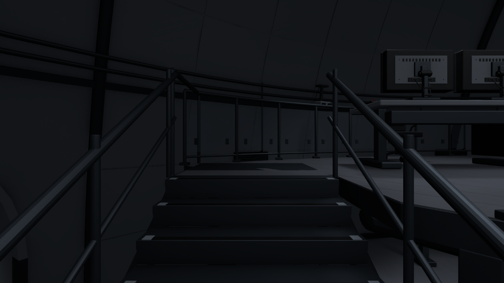
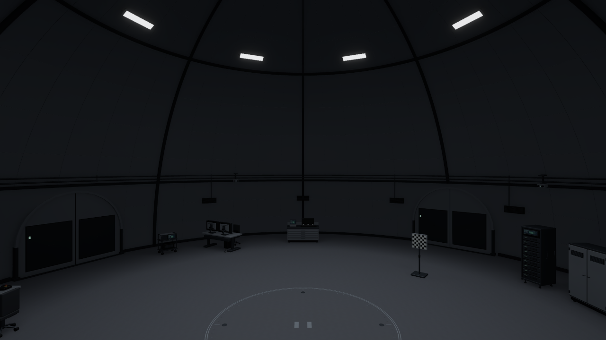

B4 · 중앙 관찰동
능력 측정·관찰층 대표 구역 / C01 + T02 · 송예찬 · 2026-11-08
상부 관찰 데크2.5m · 양측 계단 · 광학 측정/준비/기록 설비 · 복도 전용 안내
이동7/7 · Play3구역 새 로그0 · 기존5,788파일 동일
사진을 누르면 원본을 볼 수 있습니다. 검수 결과와 다음 작업

중앙 측정 공간과 관찰 데크
시험 바닥을 바라보는 상부 관측석
데크에서 보는 시험 공간
광학 센서 준비대
양측 계단과 난간
T02 복도 전용 안내
진입부 공간 관계
실제 Play · 복도
실제 Play · 계단
실제 Play · 데크현재 대표 구역만 제작. 남은 B4 구역과 층간 연결은 후속이며 장비/모니터/문은 정적 아트입니다.